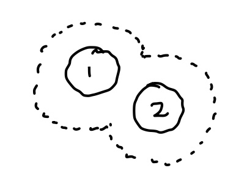
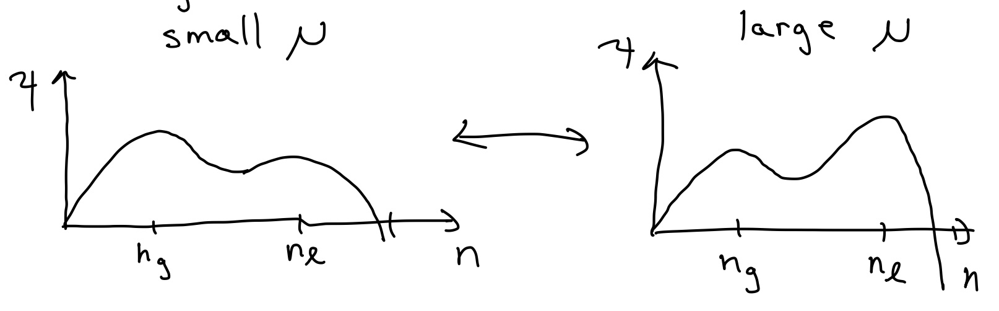
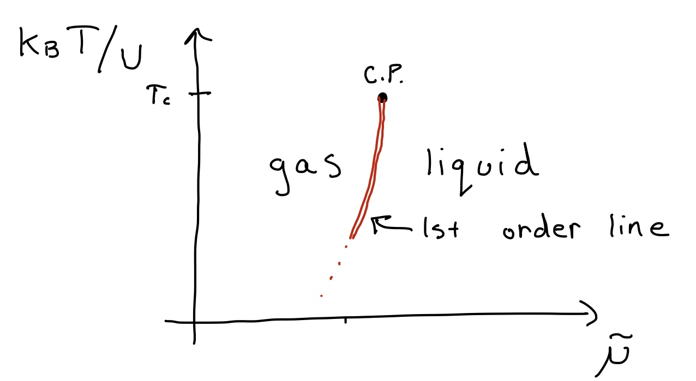
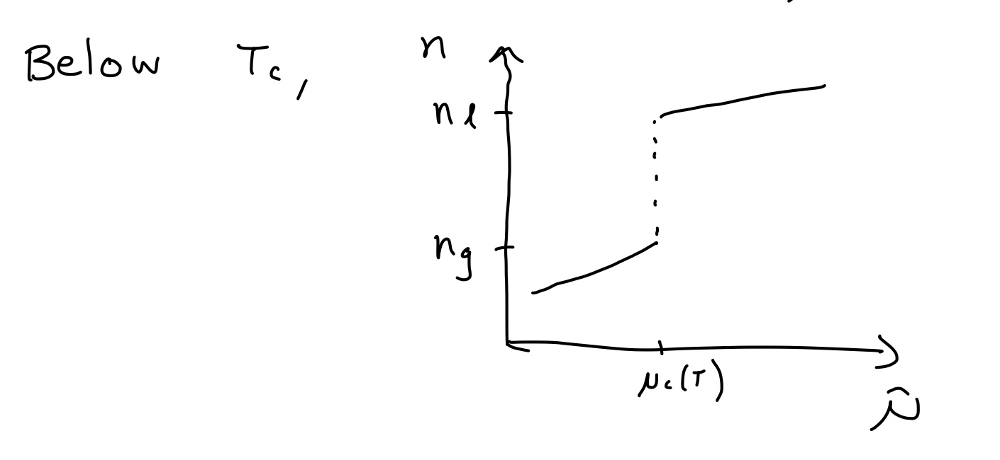
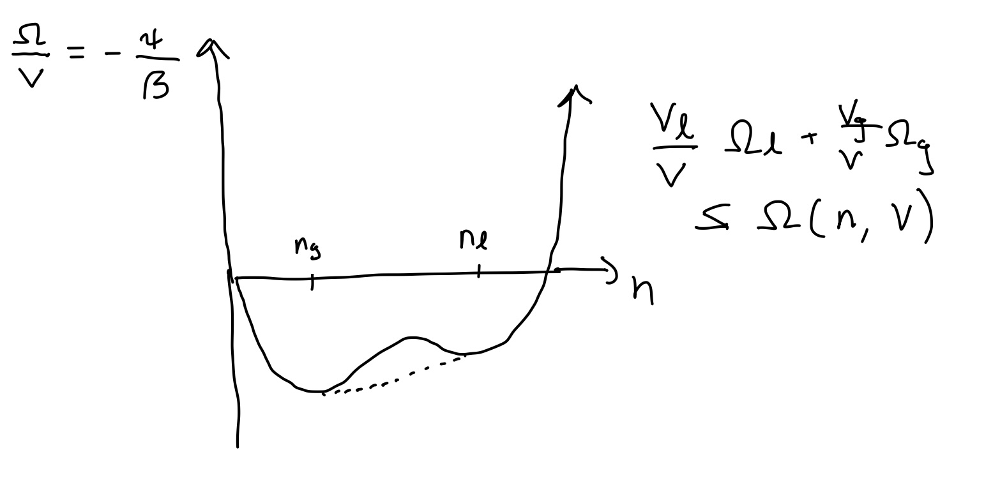

Interacting Gases#
Let’s return to the Hamiltonian of particles - now with interactions,
the partition function can be written as
where
is the partition function of the ideal gas (Eq. (4.73)), and \(\langle\mathcal{O}\rangle^{0}\) denotes the expectation value of \(\mathcal{O}\) computed with the probability distribution of the non-interacting system.
Without interactions, we have
But the “configuration integral”
can’t be exactly computed in general. We need approximations: molecular dynamics(HW), monte carlo (soon), perturbation theory in \(N / V\) (Mayer Cluster expansion, see text), mean field theory, variational approximations (today).
Before diving in, an exactly solvable warmup:
Gas of hard ID “spheres” (intervals) of “volume” (length) \(\Omega\). (Tonk’s gas)

Then
Excluded volume effect#
The “excluded volume” effect extends more generally, but in approximate sense. For this discussion, it is convenient to introduce the excluded volume \(\Omega_{ex}\) of a particle. Consider for example hard spheres. Then one sphere excludes all other sphere centers from a sphere of twice the radius, or volume \(\Omega_{ex}=2^D\Omega\), i.e. larger than just the sphere itself. Naively, we would then approximate the configurational integral as
This is approximate because of jamming …

The excluded volume for particle 3 once 1,2 placed is not strictly additive if 1,2 are close: 3 has more space available when 1,2 are close than if they are apart (see depletion force).
But if \(N \Omega_{ex} \ll V\), this interaction is rare, so approximation ok in dilute limit. So,
So effectively \(\quad V \longrightarrow V-N \Omega_{ex}/2\).
Note that this result reproduces our exact result in one dimensions, where \(\Omega_{ex}=2\Omega\).
This is an example of a “viral expansion”
As explained in the textbook, the \(B_{n}(T)\) can be computed systematically via a diagrammatic perturbation theory. This Mayer Cluster Expansion is however rather technical and its applicability somewhat limited - so we won’t discuss it in class. But have a look, especially if you’re interested in QFT. Here’s we’ll focus on the variational treatment.
Variational treatment of a gas and the van der Waals equation of state#
Our approximate treatment of a hard-sphere gas took only the “excluded volume” repulsion
But neutral molecules interact through an attractive \(U(r) \approx-4 \epsilon\left(\frac{\sigma}{r}\right)^{6}\) as \(r \rightarrow \infty\), with short-range repulsion. Why? The charged constituents of a molecule can polarize:

Since a dipole generates \(E \propto \frac{d}{r^{3}}\), and \(U\propto-\vec{E} \cdot \vec{d}\), i.e.
We can then treat this in quantum perturbation theory for a rotationally-symmetric molecule. In ground state, \(\langle\vec{d}\rangle=0\) so to first order \(\Delta E=0\). If \(\Delta=E_{1}-E_{0}\) is gap, and second order perturbation theory gives
Since \(U \sim \frac{d_{1} d_{2}}{r^{3}}, \quad \Delta E \sim-\frac{1}{r^{6}}\)
The competition between attraction, repulsion, and entropy leads to the presence of complex phase diagrams:

Mean-field treatment#
We will see that the \(Q\)-ensemble is convenient: \(\mu\) is like the “B” of Ising model, while the density \(n=N/V\) jumps like \(m\).
Variational ansatz:#
where \(N\) is our variational parameter.
If we treat the \(\left|r_{i}-r_{j}\right|>r_{0}\) constraint via the low-\(n\) excluded volume approximation,
But by our ansatz, only \(N^{\prime}=N\) contributes:
We can then apply the Gibbs inequality
Fortunately, is is easy to compute \(\left\langle U\left(r_{i}-r_{j}\right)\right)_{N}\) because in \(\langle\rangle_{N}\) particles are uncorrelated outside \(r_{0}\) :
For \(U(r)=-U_{0}\left(\frac{r_{0}}{r}\right)^{\alpha}\) for example,
So
Simple physical interpretation: each particle sees \(-u \cdot n\) on average from other particles (mean-field)
Note that the lHS has a simple interpretation in terms of pressure:
So, Eq. () can be rewritten as
Thus, our best variational approximation of the true pressure is obtained by maximizing \(\psi\) w.r.t. \(n\),
We’ll see that, as a function of \(n\), \(\psi[n,\mu,T]\) exhibits two maxima corresponding to gas and liquid. Which maximum is the global one depends, for a given temperature \(T\), on \(\mu\). To get a better sense of the behavior of \(\psi_u[n,\mu,T]\), we’ll rescale all parameters in terms of their characteristic values,
Then, our function \(\psi\) becomes
The procedure above is called “Non-Dimensionalizing” and has three benefits.
Note
Non-Dimensionalizing equations
Revealing characteristic scales: Each remaining “tilde” variable is just a number and represents the original variable in units of its characteristic scale: \(\tilde \psi\) measures \(\psi\) in units of the characteristic pressure \(P_0 =2 k_B T/\Omega_{ex}\). Without doing anything further, we know that the problem will depend on how the pressure relates to this characteristic pressure. The density is measured in units of its characteristic density \(2/\Omega_{ex}\), which is the maximal density possible with hard core interactions. etc.
Simplification: the process has uncovered that \(\tilde \psi\) really is just a function of three independent control parameters, \(\tilde u\), \(\tilde mu\) and \(\tilde n\). The parameter temperature could be fully absorbed in one of the other effective parameters.
Plotting: Thirdly, because the remaining formula relates numbers to numbers, we can directly produce plots to get a sense of the behavior of \(\tilde \psi\), without worrying about what units we should put on the different axis: Each effective parameter should be studied for values much smaller and much larger than 1.
: Depending on \(\beta\) and \(\mu\), it can be in two maxima corresponding to gas and liquid:
(add figure)
Maximize:
This has multiple \(\tilde n\)–solutions for a given \(\tilde \mu\) (see below).
Van der Waals equation of state#
But for a given \(\tilde n\), it has a single \(\tilde \mu\) solution
Substituting this back into our approximation Eq. (), we obtain an approximation of the pressure as a function of density,
Reinserting the original variables, we obtain the well-known Van der Waals equation of state:
We see the two phenomenological coefficients \(a\) and \(b\) of VdW have their origin in the mean field treatment of long-range attraction (a) and short-distance repulsion (b).
In terms of the molecular volume \(v=n^{-1}\), we can also write
showing that effect of long-range interaction is to shift \(P \rightarrow P-a n^2=P-a v^{-2}\) due to the average attraction \(u n\) experienced by each particle (mean-field).
Phase separation#
Let’s return to () determining the optimal density given the chemical potential, which can be rewritten as
Note that the RHS is a complex function, but does not depend on any parameter. The LHS is merely a straight line with negative slope. So, we may solve the equation graphically by plotting the parameter-free RHS, and see under which conditions this function can be cut by a negative slope straight line.
From the plot above, we can see that we can have three extrema. Plotting \(\psi\) on a log plot shows that there are two maxima and a minimum in the middle. Which maximum dominates, depends on \(\mu\)
The equation can be solved graphically, by noting that
Interpretation: effect of long-range interaction is to shift \(\mu \rightarrow \mu+\) un do to the average attraction un experienced by each particle (mean-field)
Choose units with \(\beta=1, \Omega_{ex}/ 2=1\), and shift \(\mu\) :
Clearly two maxima \(\longrightarrow 1\) minima. So need region
Best case: \(n=\frac{1}{3} \Rightarrow u \geq \frac{27}{4} \equiv u_{c}\)
For \(u>u_{c}, \quad \psi\) develops two maxima
at \(n_{g}<n_{l}\)


Below \(T_{c}\),

Maxwell Construction / Coexistence#
If we work in contact with particle reservoir ( \(\mu\)-ensemble), then \(n(\mu)\) jumps below \(T_{c}: n_{n g} \mathfrak{f}^{n} \longrightarrow_{N}\).
But what if we put \(n=\frac{N}{V}\) particks in a box for fixed \(N\) with \(n_{g}<n<h_{l}\) ? Intuitively, we know: it will phase separate:

